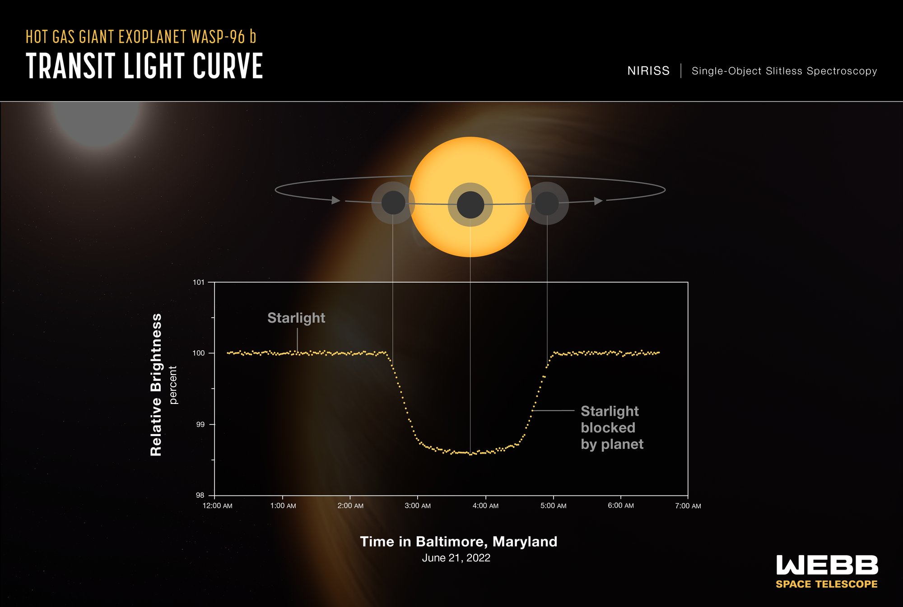

An artist's conception of the hot gas giant WASP-96 b, located in the southern-sky constellation Phoenix.
A Giant, Puffy World
WASP-96 b is a type of exoplanet known as a "hot Jupiter." It has roughly half the mass of our Jupiter but is 1.2 times larger, making it extremely "puffy." It orbits incredibly close to its Sun-like star, completing a full orbit every 3.4 Earth days, which pushes its temperature past 1000°F (538°C).
Because it is so large, hot, and orbits so frequently, it is the perfect target for Webb to test its atmospheric analysis capabilities. While Webb cannot take a direct, high-resolution photograph of a planet this close to its star, it can capture something far more valuable: its chemical spectrum.

The Technology Behind the Spectrum
NIRISS (Near-Infrared Imager and Slitless Spectrograph)
Webb used its NIRISS instrument to observe WASP-96 b as it passed directly in front of its host star—an event called a transit. As the starlight passed through the outer edges of the planet's atmosphere, gases in the atmosphere blocked specific colors (wavelengths) of infrared light.
Transmission Spectroscopy
By comparing the light of the star when the planet is *beside* it versus when the planet is *in front* of it, scientists can isolate exactly which wavelengths are missing. These missing wavelengths form an absorption spectrum, acting like a barcode that tells us exactly which molecules are floating in the alien air.
Finding Water in the Cosmos
Webb's analysis of WASP-96 b was the most detailed near-infrared transmission spectrum of an exoplanet atmosphere ever captured at the time, and it yielded immediate surprises.
- The Signature of Water: The spectrum revealed distinct, undeniable bumps corresponding to the presence of water vapor in the atmosphere.
- Clouds and Haze: Previous observations from ground-based telescopes suggested WASP-96 b had a completely clear sky. Webb's precise infrared data proved that the planet actually has clouds and hazes.
- A Stepping Stone: While WASP-96 b is far too hot to support life, successfully detecting water here proves that Webb's instruments are sensitive enough to analyze the atmospheres of smaller, cooler, Earth-like planets in the future, searching for biosignatures.